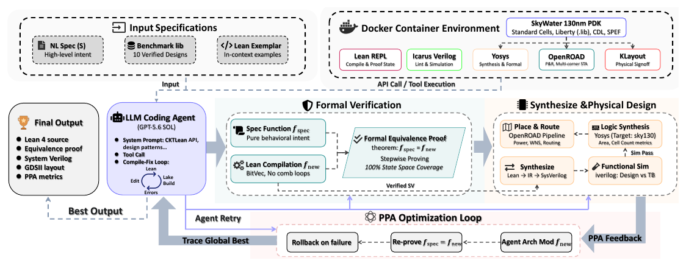
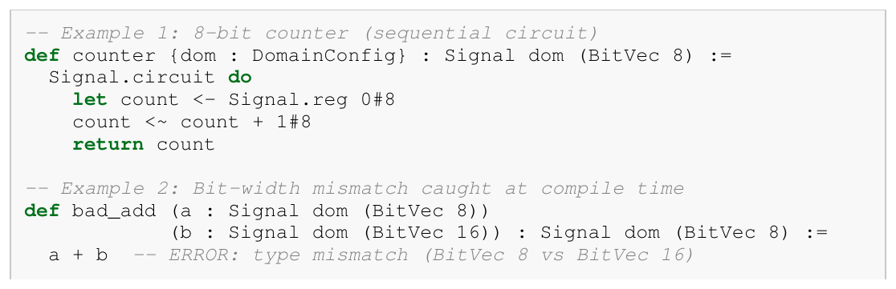
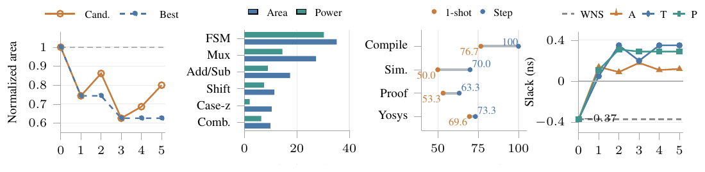

Structural
Lean checks bit widths, ports, clock-domain parameters, and exhaustive pattern matches before RTL extraction.
Autoformalization of natural language into circuit representations.

01 · The foundation
CktLean extends Sparkle’s typed hardware representation, elaboration, and backend lowering. Widths, state, signedness, and clock domains remain explicit as a design moves from Lean source to SystemVerilog.
The persistent Lean REPL turns compiler diagnostics and proof goals into feedback an agent can use. That gives CktFormalizer a structured loop for generation, repair, optimization, and source-level equivalence proving.

02 · The agentic loop
CktFormalizer separates three kinds of correctness and lets each tool report back at the stage where it has the most leverage.
Lean checks bit widths, ports, clock-domain parameters, and exhaustive pattern matches before RTL extraction.
Kernel-accepted lemmas establish circuit-to-specification or implementation-to-implementation equivalence under explicit assumptions.
Reference simulation and RTL equivalence checks test whether the generated design behaves as intended on exercised traces.
03 · Evidence
Select a benchmark to inspect the end-to-end pass rates reported in Table 3. Values are percentages; downstream columns are conditioned on RTL simulation passing.
04 · Proof + PPA
Stepwise proof states improve formal completion, while synthesis feedback enables architecture exploration and correctness-aware PPA optimization.
Interactive proof replay · verified trace
This is the circuit from Benchmark/Prob054_edgedetect.lean. Pick an input trace to run the sequential logic, then advance the same four tactics accepted by the local Lean REPL.
At cycle t, d_last remembers in[t−1]; pedge registers the detected edge.
Kernel-accepted source trace. The replay mirrors the checked sequence unfold → dsimp only → change → rfl. It is a deterministic presentation of that verified trace; the page does not pretend to run Lean in the browser.
Run the trace on the left to see the sequential behavior, then advance one tactic at a time. On a 30-problem VerilogEval pilot, stepwise refinement raised kernel-accepted proof completion from 53.3% to 63.3%.

The acceptance rule keeps a candidate only when it passes evaluation, improves at least one metric beyond the threshold, and avoids unacceptable regressions in the other metrics.
@article{cktformalizer2026,
title = {CktFormalizer: Autoformalization of Natural Language into Circuit Representations},
author = {Jing Xiong and Qi Han and Chenchen Ding and He Xiao and Chaofan Tao and Zunhai Su and Qingyao Yang and Xiachong Feng and Kailai Yang and Ngai Wong},
journal = {arXiv preprint arXiv:2605.07782},
year = {2026},
url = {https://arxiv.org/abs/2605.07782}
}